Наука · журнал «ДентАрт» 2016 №1
Оптична анізотропія емалі зуба
OPTICAL ANISOTROPY OF DENTAL ENAMEL
Вступ
У сучасній стоматології досить поширене застосування оптичних неруйнівних методів діагностики уражень зубів. У зв'язку з цим зберігається інтерес до вивчення оптичних характеристик твердих тканин зуба. Останнім часом інтерес до цієї проблеми значно зріс. Це пов'язано з розвитком методик прямих естетичних реставрацій зубів і застосуванням сучасних реставраційних матеріалів, які зовні дуже схожі з натуральними твердими тканинами. Схожі показники кольору і напівпрозорості твердих тканин і матеріалів зумовлені подібністю таких оптичних характеристик, як розсіювання і поглинання світла. Однак з точки зору оптики тверді тканини мають істотну відмінність від реставраційних матеріалів. Реставраційні матеріали — це ізотропні середовища, оптичні властивості яких не пов'язані з напрямком. Оптичні властивості емалі та дентину пов'язані з напрямком і за їх упорядкованої структури є анізотропними середовищами. З одного боку, оптична анізотропія становить інтерес для клініцистів, оскільки тією чи іншою мірою визначає співвідношення пропускання і розсіювання світла твердими тканинами. З другого боку, зв'язок оптичної анізотропії з будовою твердих тканин може становити інтерес для морфологів. Мета цієї статті — показати зв'язок між морфологічними особливостями і анізотропними властивостями емалі зуба, а також визначити умови, за яких можна спостерігати прояв цих якостей.
Матеріали і методи
Дослідження провадилося на премолярах верхньої щелепи. Із щойно видалених зубів готувалися плоскопаралельні шліфи, які зберігалися у 4% формаліні за кімнатної температури. Площина шліфа відповідала вестибуло-оральному вертикальному перерізу і проходила через середину коронки. Механічна обробка поверхонь шліфа абразивами (шліфування та полірування) робилася на твердій основі, що виключало утворення якого-небудь мікрорельєфу на поверхнях.
Для дослідження використовувалася експериментальна установка, схематично зображена на рис. 1. Спочатку виготовлявся шліф товщиною 500 мкм. Після його фотографування шліф стоншувався і фотографувався відповідно при товщині 400, 300 і 200 мкм. Шліф зуба клали у скляну циліндричну кювету, заповнену водою. Пучок світла гелій-неонового лазера, поляризований у площині шліфа, падав на поверхню емалі, пройшовши через щілинну діафрагму. Кювета і діафрагма на рис. 1 не показані. На дні кювети під шліфом розміщувався нейтральний абсорбційний фільтр з коефіцієнтом пропускання 10%.
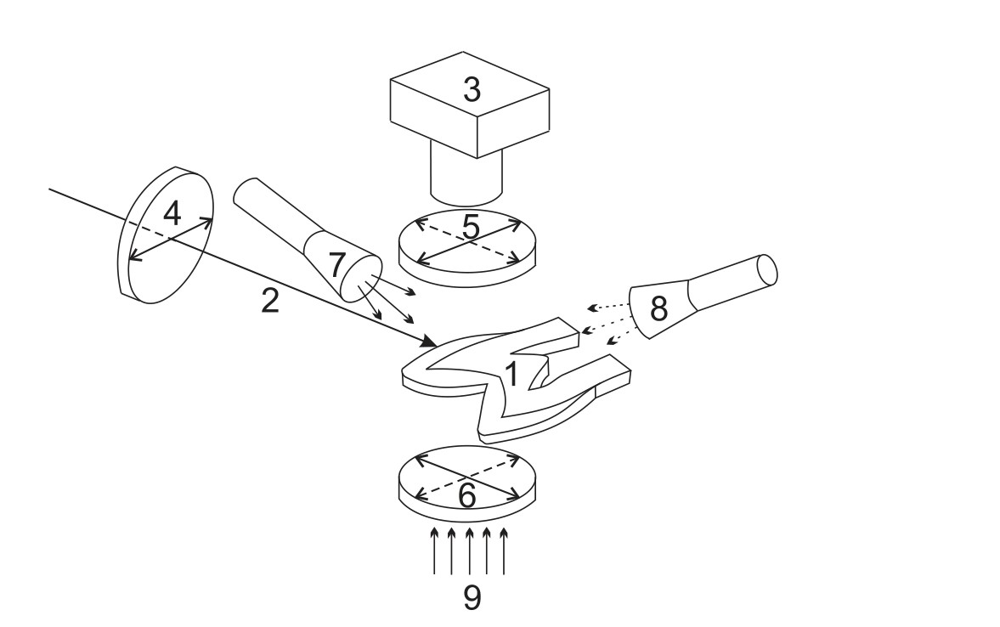
Рис. 1. Схема експерименту. 1 — шліф коронкової частини зуба. Перший премоляр верхньої щелепи. Вестибуло-оральний переріз. 2 — промінь лазера. Промінь спрямований на оральну (піднебінну) поверхню емалі і перебуває у площині шліфа. 3 — фотоапарат, орієнтований по нормалі до площини шліфа. 4 — поляризатор на виході з лазера. Головна площина поляризатора (площина коливань вектора Ē) позначена суцільною двосторонньою стрілкою і збігається з площиною шліфа. 5 — поляризатор на вході у фотоапарат. Головна площина поляризатора може бути орієнтована перпендикулярно напрямкові лазерного пучка (суцільна двостороння стрілка) або паралельно напрямкові лазерного пучка (пунктирна двостороння стрілка). 6 — поляризатор на виході джерела світла для спостереження шліфа у прохідному світлі. Двосторонніми стрілками показано головні площини при спостереженні шліфа між схрещеними або паралельними поляризаторами. 7 — джерело світла для спостереження шліфа у відбитому світлі при косому падінні світла на поверхню шліфа з боку піднебінної поверхні емалі. 8 — джерело світла для спостереження шліфа у відбитому світлі при косому падінні світла на поверхню шліфа з боку вестибулярної поверхні емалі. 9 — світло джерела для спостереження шліфа у прохідному світлі.
Провадилося фотографування шліфа за таких ситуацій:
- у відбитому неполяризованому світлі, коли світло падало дифузно на поверхню шліфа;
- у неполяризованому світлі (джерело 9 без поляризатора);
- у прохідному поляризованому світлі при схрещених поляризаторах 5, 6;
- у прохідному поляризованому світлі при паралельних поляризаторах 5, 6;
- при падінні пучка He-Ne лазера на піднебінну поверхню емалі і проходженні світла через шліф при схрещених поляризаторах 5, 6;
- при падінні пучка He-Ne лазера на піднебінну поверхню емалі і одночасному підсвічуванні від джерела 7 або від джерела 8 при орієнтації головної площини поляризатора фотоапарата 5 перпендикулярно напрямку лазерного пучка;
- при падінні пучка He-Ne лазера на піднебінну поверхню емалі і одночасному підсвічуванні від джерела 7 або від джерела 8 при орієнтації головної площини поляризації фотоапарата 5 паралельно напрямку лазерного пучка.
Результати та обговорення
Отримані зображення шліфів одного і того ж самого зуба подані на фото 1-10. Із зіставлення зображень шліфа, сфотографованого у відбитому світлі при дифузному падінні світла у неполяризованому прохідному світлі (фото 1 а, б), видно, що тверді тканини зуба — це напівпрозорі оптичні середовища. При цьому емаль прозоріша, ніж дентин. У відбитому світлі при будь-якій товщині шліфа (від 500 до 200 мкм) помітні смуги Гунтера-Шрегера, а в прохідному світлі цих смуг не видно.

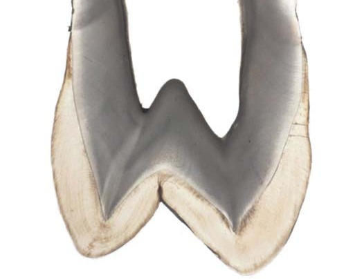
Фото 1. Шліф товщиною 300 мкм у відбитому світлі при дифузному падінні світла (а) і в прохідному неполяризованому світлі (б).
Смуги Гунтера-Шрегера стає видно у світлі, якщо помістити шліф між поляризаторами (фото 2). Картина смуг Гунтера-Шрегера, яка спостерігається у прохідному поляризованому світлі, зумовлена ефектом так званої інтерференції у паралельних променях при взаємодії світла з кристалами апатитів. Механізм цього ефекту такий. Якщо промінь лінійно поляризованого світла, вийшовши з поляризатора, входить у плоскопаралельну пластинку, виготовлену з одноосного кристала, під кутом до його оптичної осі, то всередині пластинки він розподіляється на два промені: звичайний і незвичайний (ефект подвійного променезаломлення). Вийшовши з кристалічної пластинки, ці промені мають різні фази і поляризовані в різних площинах. Пройшовши крізь другий поляризатор, який прийнято називати «аналізатором», світло стає знову лінійно поляризованим, завдяки чому промені набувають однієї площини поляризації, що дозволяє їм інтерферувати. Оскільки різниця фаз залежить від довжини хвилі, то ті чи інші довжини хвиль опиняються у синфазному або протифазному стані, і таким чином інтерференційна картина виходить забарвленою [1].
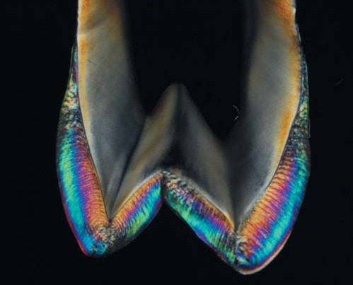
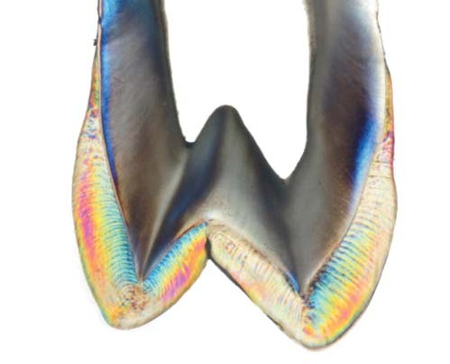
Фото 2. Той самий шліф товщиною 300 мкм у прохідному поляризованому світлі при схрещених (а) і паралельних поляризаторах (б).
Подібні ефекти відбуваються на кожному кристалі гідроксиапатиту емалі. Відомо, що кристали гідроксиапатиту емалі оптично одновісні і мають негативний двопроменезалам. Різниця між показником заломлення звичайного і незвичайного променя становить (no - ne) = - 0,003 [2]. Оптична вісь кристала збігається з його кристалографічною віссю (c-віссю, віссю геометричної симетрії). При схрещених поляризаторах система «поляризатор — шліф емалі — аналізатор» пропускає лише частину світла, яка зазнала подвійного променезаломлення. При паралельних поляризаторах до цього світла додається світло, яке пройшло систему і не зазнало подвійного променезаломлення, внаслідок чого емаль при паралельних поляризаторах завжди має світліший вигляд, а кольори аналогічних ділянок змінюються на додаткові (фото 2, 3, 4).
Інтенсивність прохідного світла і його спектральний склад залежать від товщини зразка, від орієнтації поляризаторів та орієнтації оптичних осей кристалів гідроксиапатиту щодо напрямку поширення світлового потоку. Останнє легко підтвердити, обертаючи площину шліфа щодо напрямку прохідного світла таким чином, щоб змінювався кут між напрямком емалевої призми і світловим потоком. Оскільки основна маса кристалів орієнтована своїми осями вздовж напрямку емалевої призми, зміна напрямку якої-небудь ділянки призми щодо світлового потоку означає зміну напрямку осей основної маси кристалів. Слід враховувати, що на периферії призм, де вони контактують одна з одною, осі кристалів відхиляються. У найвіддаленіших від центру призми ділянках (так званий «хвіст замкової щілини») це відхилення досягає 60-70° [3]. Кристали, осі яких відхиляються від напрямку призми, зменшують упорядкованість і збільшують ступінь хаотичності орієнтації оптичних осей. Така хаотичність щодо поляризованого світла, яке проходить крізь емаль, збільшується зі збільшенням товщини зразка (шліфа), внаслідок чого чіткість і багатобарвність картини смуг Гунтера-Шрегера зменшується (фото 3 а).
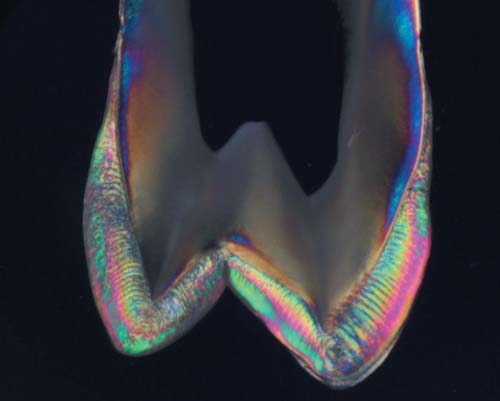
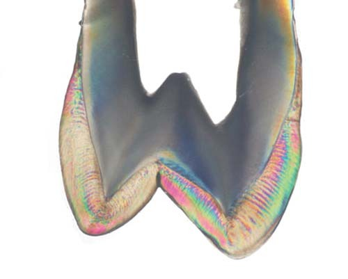
Фото 3. Шліф початковою товщиною 500 мкм у прохідному поляризованому світлі при схрещених (а) і паралельних поляризаторах (б).
Зменшення товщини зразка також зменшує багатобарвність картини. Після стоншування шліфа до 200 мкм емаль забарвлюється у білий, сірий і жовтий кольори (фото 4 а). Така зміна колірної гами зумовлена зміною так званої різниці ходу між звичайним і незвичайним променем, яка пропорційна товщині кристалічної пластинки (у нашому випадку — шліфа) і різниці показника заломлення звичайного і незвичайного променя [1]. Таким чином, з огляду на розташування кристалів у призмі, поперечні розміри призм, їх кількість і гексагональне розташування в пучку, а також наявність їх вигинів, можна сказати, що товщина шліфа в інтервалі 300-400 мкм для спостереження смуг Гунтера-Шрегера у прохідному поляризованому світлі є оптимальною.
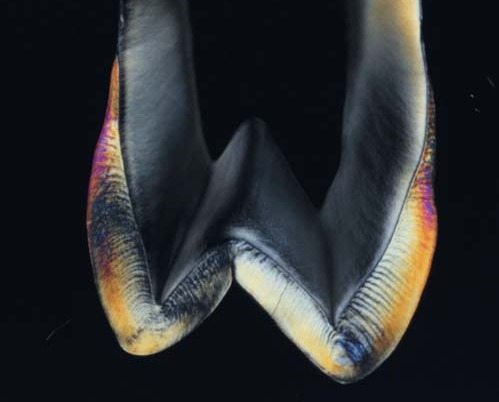
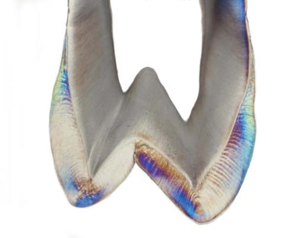
Фото 4. Шліф товщиною 200 мкм у прохідному поляризованому світлі при схрещених (а) і паралельних поляризаторах (б).
При розгляді емалі між схрещеними або паралельними поляризаторами за будь-якої товщини шліфа смуги Гунтера-Шрегера найбільше проявлялися у внутрішній половині шару емалі. У зовнішній його половині смуги майже не проявлялися, а також не змінювався колір у напрямку, паралельному дентиноемалевому з'єднанню. Найвиразніше це видно за товщини шліфа 300 мкм (фото 2 а). Синьо-зелений колір зовнішньої половини шару емалі говорить про те, що тут основна маса оптичних осей кристалів має одну орієнтацію щодо прохідного світла, а це, у свою чергу, засвідчує, що емалеві призми орієнтовані однаково щодо площини шліфа і не мають синусоїдальних вигинів. У пришийковій зоні рисунка смуг Гунтера-Шрегера немає, що може бути зумовлене вираженішою хаотичністю орієнтації оптичних осей кристалів відносно напрямку призм у цій зоні [4]. У зоні верхівок горбів рисунка смуг Гунтера-Шрегера також немає, оскільки емалеві призми тут згинаються спіралевидно [5].
При підсвічуванні шліфа променем лазера картина бічного розсіювання лазерного світла у внутрішній половині шару емалі відповідає рисунку смуг Гунтера-Шрегера (фото 5, 6). Таким чином, можна зробити висновок про те, що при падінні світла на поверхню зуба його поширення всередині емалі має зв'язок з напрямком і вигинами емалевих призм. Ця залежність добре виявлялася при спостереженні шліфа (рис. 1) у відбитому світлі в умовах одночасного падіння лазерного пучка на поверхню емалі і косого падіння світла на поверхню площини шліфа з боку піднебінної поверхні коронки (джерело 7) або з боку вестибулярної поверхні (джерело 8).
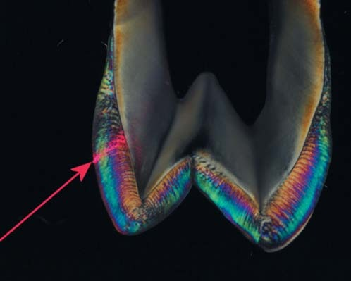
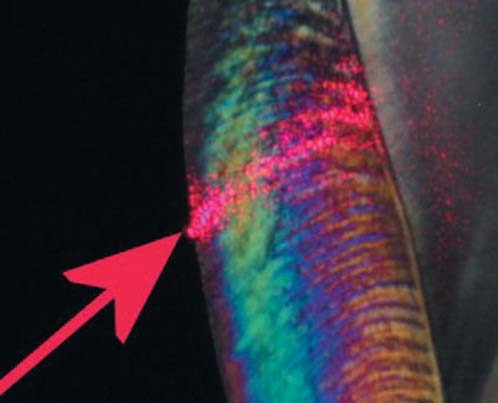
Фото 5. Шліф товщиною 300 мкм при схрещених поляризаторах при падінні лазерного променя на піднебінну поверхню емалі (а). Ділянка емалі в місці проникнення лазерного променя (б).
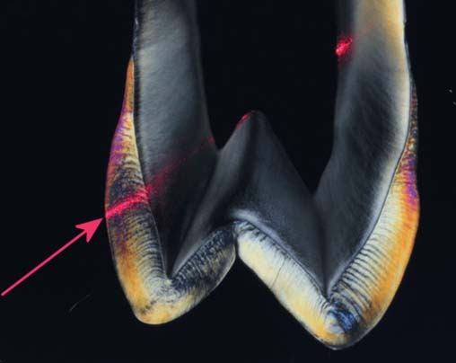
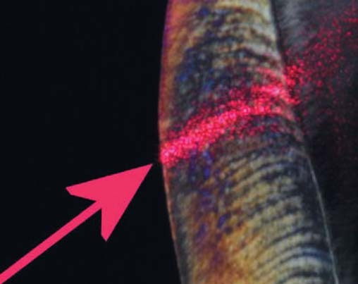
Фото 6. Шліф товщиною 200 мкм при схрещених поляризаторах при падінні лазерного променя на піднебінну поверхню емалі (а). Ділянка емалі у місці проникнення лазерного променя (б).
Важливо зазначити, що при косому падінні світла на поверхню площини шліфа з боку піднебінної поверхні емалі картина бічного розсіювання лазерного світла своїми максимумами збігалася зі світлими смугами, які зумовлені світлом джерела (фото 7). При косому падінні світла на поверхню площини шліфа з протилежного боку (від вестибулярної поверхні емалі) картина бічного розсіювання лазерного світла своїми максимумами збігалася з темними смугами (фото 8). Подані ефекти (фото 7, 8) можна пояснити хвилевідною моделлю поширення світла в емалевих призмах [6].
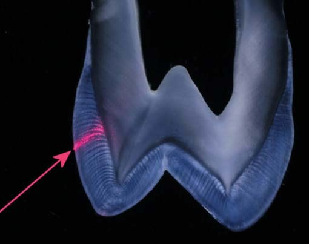
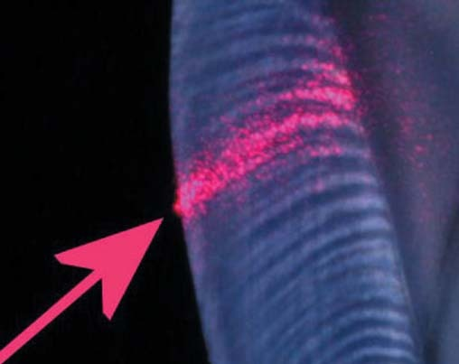
Фото 7. Шліф товщиною 300 мкм при опроміненні поверхні емалі променем He-Ne лазера і одночасному підсвічуванні від джерела 7 (а). Ділянка емалі в місці проникнення лазерного променя (б).
Відомо, що в зонах контакту сусідніх призм (міжпризматична речовина) рівень мінералізації нижчий, ніж усередині призми, у зв'язку з чим показник заломлення у призм (np ≈ 1,62) більший, ніж у міжпризматичній речовині (nip ≈ 1,57) [7]. З цього випливає, що світло може поширюватися всередині призми, зазнаючи повного внутрішнього віддзеркалення на її межах, як це відбувається всередині оптичного хвилевода (світловода). Також відомо, що максимальний кут відхилення вигину призми від її загального напрямку становить близько 20° [8]. Якщо вважати, що поверхня шліфа паралельна загальному ходу призми, то вона перетинає вигини пучка призм під тим самим кутом 20° (рис. 2). При цьому торці пересічених призм повинні бути спрямовані до поверхні емалі під такими самими кутами у двох протилежних напрямках.
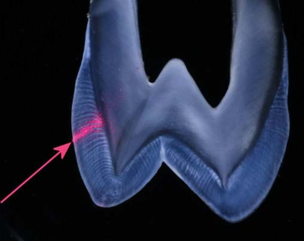
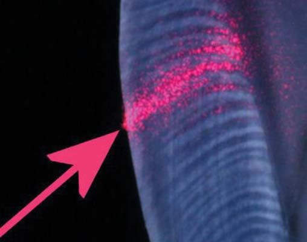
Фото 8. Той самий шліф при опроміненні поверхні емалі променем He-Ne лазера і одночасному підсвічуванні від джерела 8 (а). Ділянка емалі в місці проникнення лазерного променя (б).
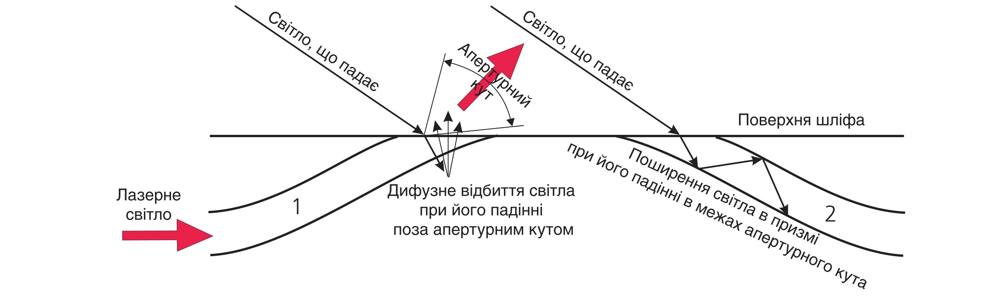
Рис. 2. Схема взаємодії світла з емалевою призмою. 1 — зовнішній фрагмент призми, перетнутий поверхнею шліфа. 2 — внутрішній фрагмент призми, перетнутий поверхнею шліфа.
Якщо світло, що падає під кутом на поверхню шліфа, потрапляє на торець призми, звернений до джерела 2 (рис. 2), то воно входить в емаль в межах апертурного кута призми (світловода) і поширюється всередині неї. У таких зонах поверхні емалі утворюються темні смуги. Якщо те ж саме світло падає на торець призми, звернений від джерела 1 (рис. 2), то воно входить у призму поза апертурним кутом і після заломлення на поверхні шліфа потрапляє на її внутрішню поверхню під кутом, меншим, ніж граничний кут повного внутрішнього відображення. У цьому випадку світло має вийти у сусідню призму, що призведе до збільшення дифузно відбитого світлового потоку, утвореного бічними поверхнями в пучку сусідніх призм, і до утворення світлої смуги. При протилежному напрямку світла, що косо падає на поверхню шліфа, пучки призм будуть мінятися ролями, «працюючи» точно так само. Тому зі зміною напрямку світлового потоку на поверхню шліфа відбуватиметься інверсія світлоти смуг у відбитому світлі.
Такий механізм прояву смуг Гунтера-Шрегера підтверджується характером поширення лазерного світла всередині емалі. З огляду на кут падіння лазерного пучка на зовнішню поверхню емалі (рис. 1), світло лазера має входити в призму всередині її апертурного кута і переважно поширюватися всередині призми, як по світловоду. У місці виходу торця призми на поверхню виходить і світло від лазера (рис. 2). Тому в цьому випадку картина бічного розсіювання лазерного світла своїм максимумом збігається зі світлою смугою, утвореною світлом, яке падає на поверхню шліфа з боку піднебінної поверхні (джерело 7, рис. 1). При зміні напрямку світлового потоку на поверхню шліфа (джерело 8, рис. 1) максимуми бічного розсіювання лазерного світла збігаються з темними смугами.
Слід зазначити, що картини смуг Гунтера-Шрегера, які спостерігаються у відбитому світлі, найвиразніше проявлялися, якщо джерело світла містилося в тій самій азимутальній площині, в якій синусоїдально згинаються призми досліджуваної ділянки емалі. При цьому товщина зразка в межах від 500 до 200 мкм впливу не чинила. Для отримання найчіткішої картини смуг при лазерному підсвічуванні необхідно було використовувати два поляризатори (рис. 1). Поляризатор на виході з лазера з головною площиною, орієнтованою в площині шліфа, дозволяв підвищити контраст картини бічного розсіювання, включаючи смуги Гунтера-Шрегера. Поляризатор фотоапарата впливав на ступінь прояву картин бічного розсіювання лазерного світла. При розташуванні головної площини поляризатора фотоапарата перпендикулярно напрямку лазерного пучка картини бічного розсіювання було добре видно (фото 5, 6, 7, 8). При розташуванні головної площини поляризатора паралельно напрямку лазерного пучка картини бічного розсіювання майже зникали (фото 9, 10). Однак при цьому зберігалися описані вище закономірності взаємодії світла з емалевими призмами, що було видно з розташування лазерних спеклів. При підсвічуванні від джерела 7 спекли розташовувалися в зоні світлих смуг (фото 9). При підсвічуванні від джерела 8 спекли розташовувалися в зоні темних смуг (фото 10).
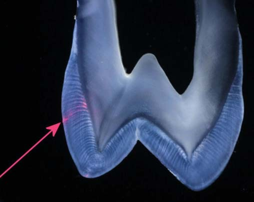
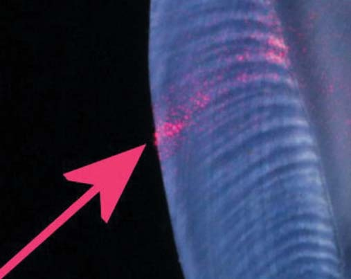
Фото 9. Шліф при опроміненні поверхні емалі променем He-Ne лазера і одночасному підсвічуванні від джерела 7 (а). Ділянка емалі в місці проникнення лазерного променя (б). Ослаблення картини бічного розсіювання лазерного випромінювання при розташуванні головної площини поляризатора фотоапарата паралельно напрямкові лазерного пучка.
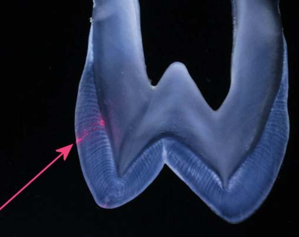
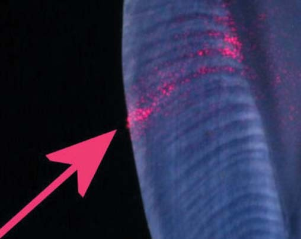
Фото 10. Шліф при опроміненні поверхні емалі променем He-Ne лазера і одночасному підсвічуванні від джерела 8 (а). Ділянка емалі в місці проникнення лазерного променя (б). Ослаблення картини бічного розсіювання лазерного випромінювання при розташуванні головної площини поляризатора фотоапарата паралельно напрямкові лазерного пучка.
Вище було показано, що у прохідному неполяризованому світлі при його нормальному падінні на шліф смуг не видно (фото 1 б). Однак при косому падінні на нижню поверхню шліфа вони можуть чітко проявлятися. Схема такого експерименту подана на рис. 3, а результати — на фото 11.
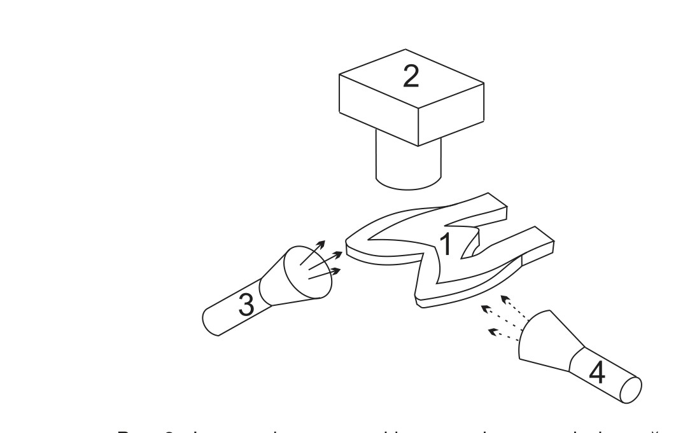
Рис. 3. Фотографування шліфа у прохідному світлі при його косому падінні. 1 — шліф коронкової частини зуба. Премоляр верхньої щелепи. Вестибуло-оральний переріз. 2 — фотоапарат, орієнтований по нормалі до площини шліфа. 3 — джерело світла для фотографування шліфа у прохідному світлі при косому падінні світла на поверхню шліфа з боку піднебінної поверхні емалі. 4 — джерело світла для фотографування шліфа у прохідному світлі при косому падінні світла на поверхню шліфа з боку вестибулярної поверхні.
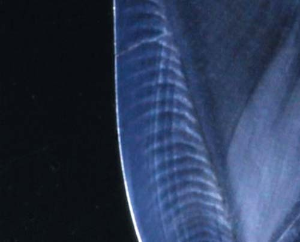
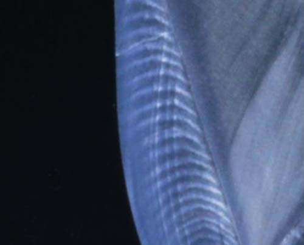
Фото 11. Шліф верхнього премоляра товщиною 150 мкм. Ділянка емалі у прохідному світлі при косому падінні світла з боку піднебінної поверхні (а) — джерело 3 і при косому падінні світла з боку вестибулярної поверхні (б) — джерело 4.
Комп'ютерне суміщення рисунків смуг Гунтера-Шрегера (фото 11 а, б) за допомогою графічного редактора (Paint Shop Pro X6) засвідчило, що при зміні напрямку світла, яке падає косо, також відбувається зміщення, або інверсія світлоти смуг Гунтера-Шрегера, як і у відбитому світлі. При цьому розташування ліній Ретціуса залишається незмінним. Механізм утворення смуг у прохідному неполяризованому світлі також можна пояснити на основі хвилевідної моделі поширення світла в емалевих призмах. Якщо світло джерела входить у пучки призм всередині їх апертурних кутів, то воно поширюється уздовж призм і виходить через верхню поверхню шліфа, утворюючи світлу смугу. Якщо світло того ж самого джерела входить у пучки призм поза їх апертурними кутами, то воно відбивається бічними поверхнями призм, внаслідок чого зі шліфа виходить менше світла і утворюється темна смуга. При зміні положення джерела (3↔4, рис. 3) відбувається інверсія, або зсув смуг. Умовами спостереження цих ефектів є відносно невелика товщина шліфа (не більше 200 мкм) і розміщення джерела світла в тій самій азимутальній площині, в якій синусоїдально згинаються призми досліджуваної ділянки емалі. При цьому наявність нейтрального поглинаючого фільтра між шліфом та джерелом світла, що падає косо, підвищує контраст зображення.
Висновки
З оприлюднених у статті результатів можна зробити висновки щодо особливостей архітектоніки емалі і зумовлених ними оптичних властивостей. Спільний аналіз зображень шліфа, отриманих у відбитому і прохідному поляризованому світлі, засвідчує, що вигини призм більш виражені біля дентиноемалевого з'єднання і менш виражені біля поверхні емалі. Характер інверсії світлоти смуг Гунтера-Шрегера при зміні напрямку світлового потоку на поверхню шліфа засвідчує симетричність відхилення вигинів призм від площини меридіонального перетину. Оптичний ефект смуг Гунтера-Шрегера у відбитому та прохідному неполяризованому світлі зумовлений хвилевідно-розсіювальними властивостями емалевих призм. Слід зазначити, що хвилевідні ефекти в емалі виражені незначною мірою і не становлять особливого інтересу для клініцистів. Хвилевідно-розсіюючі властивості дентину виражені набагато сильніше, вони впливають на естетику зуба і поширення світла полімеризуючих джерел через тверді тканини, про що розповімо у наступній статті.
Література
- Шубников А.В. Интерференция света в кристаллических пластинках. В кн.: Основы оптической кристаллографии. — М.: Издво АН СССР, 1958. — С. 63-117.
- Carlström D., Glas J.E. Studies on the ultrastructure of dental enamel. III. The birefringence of human enamel // J. Ultastruct. Res. — 1963. — Vol. 8, №1-2. — P. 1-11.
- Meckel A.H., Griebstein W.J., Neal R.J. Structure of mature human dental enamel as observed by electron microscopy // Arch. Oral Biol. — 1965. — Vol. 10, № 5. — P. 775-783.
- Lyon D.G., Darling A.I. Orientation of the crystallites in human dental enamel // Brit. Dent. J. — 1957. — Vol. 102, №1-2. — P. 483-488.
- Osborn J.W. Directions and interrelationship of prisms in cuspal or cervical enamel of human teeth // J. Dent. Res. — 1968. — Vol. 47, № 3. — P. 395-402.
- Grisimov V.N. Optical model of Hunter-Schreger bands phenomenon in human dental enamel. In: «Medical Applications of Lasers in Dermatology, Cardiology, Ophthalmology and Dentistry II»: Proc. SPIE. — 1999. — Vol. 3564. — P. 237-242.
- Zijp J.R., ten Bosch J.J., Groenhuis R.A.J. He-Ne-laser light scattering by human dental enamel // J. Dent. Res. — 1995. — Vol. 74, № 12. — P. 1891-1898.
- Osborn J.W. Evaluation of previous assessments of prism directions in human enamel // J. Dent. Res. — 1968. — Vol. 47, № 2. — P. 217-222.